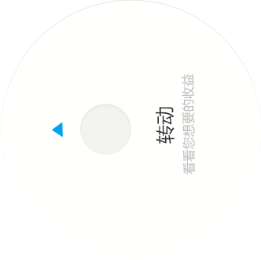

<div>rotation::<input type="text" id="rotation"/></div>
<div>progress::<input type="text" id="progress"/></div>
<br/>
<br/>
<br/>
<br/>

<div class="btn" style="position: relative">
    <script src="../js/index_btn/jquery.min.js"></script>
    <script src="../js/index_btn/jquery-ui.min.js"></script>

    <script src="../js/index_btn/TweenMax.min.js?r=4"></script>
    <script src="../js/index_btn/Draggable.min.js?r=4"></script>
    <script src="../js/index_btn/progressbar.min.js?r=4"></script>
    <div style="display:table-cell;">
        
        
        <div id="progressbar"
             style="width:260px;height:200px;margin-left: 27px;margin-top: 46px;z-index: 88;position: absolute;    pointer-events: none;"></div>
    </div>

    <script type="text/javascript">

        $(function () {

            initSpin();

        });

        var progressBar = new ProgressBar.SemiCircle("#progressbar", {
            strokeWidth: 4,
            color: '#38b1ef',
            trailColor: '#eee'
        });

        function initSpin() {
            var $dial = $("#dial"),
                    rotationSnap = 90;

            //you can feed this function a value and an increment to snap to and it'll find the closest one. For example, getClosest(60, 100) would return 100 and getClosest(30, 100) would return 0. We use this for snapping to 90-degree increments.
            function getClosest(value, increment) {
                return Math.round(value / increment) * increment;
            }

            Draggable.create($dial, {
                type: "rotation", //instead of "x,y" or "top,left", we can simply do "rotation" to make the object spinnable!
                throwProps: true, //enables kinetic-based flicking (continuation of movement, decelerating after releasing the mouse/finger)
                //最大旋转角度 180  360 ....
                bounds: {minRotation: 0, maxRotation: 180},
                snap: function (endValue) {
                    //this function gets called when the mouse/finger is released and it plots where rotation should normally end and we can alter that value and return a new one instead. This gives us an easy way to apply custom snapping behavior with any logic we want. In this case, we'll just make sure the end value snaps to 90-degree increments but only when the "snap" checkbox is selected.
//                    结束角度
                    //console.log("endValue:" + endValue);
                    return endValue;
                },
                onDrag: function () {
                    var progress = parseFloat(draggable.rotation / 180);
//                    可读
                    //console.log("progress="+progress);
                    $("#progress").val(progress);
                    progressBar.animate(progress, {
                        duration: 1
                    }, function () {
                        //console.log('Animation has finished');
                    });
                    //                    角度
                    $("#rotation").val(this.rotation);
                    // console.log("rotation=" + this.rotation + "," + this.x);
                }
            });

            var draggable = Draggable.get($dial);
        }
    </script>

</div>